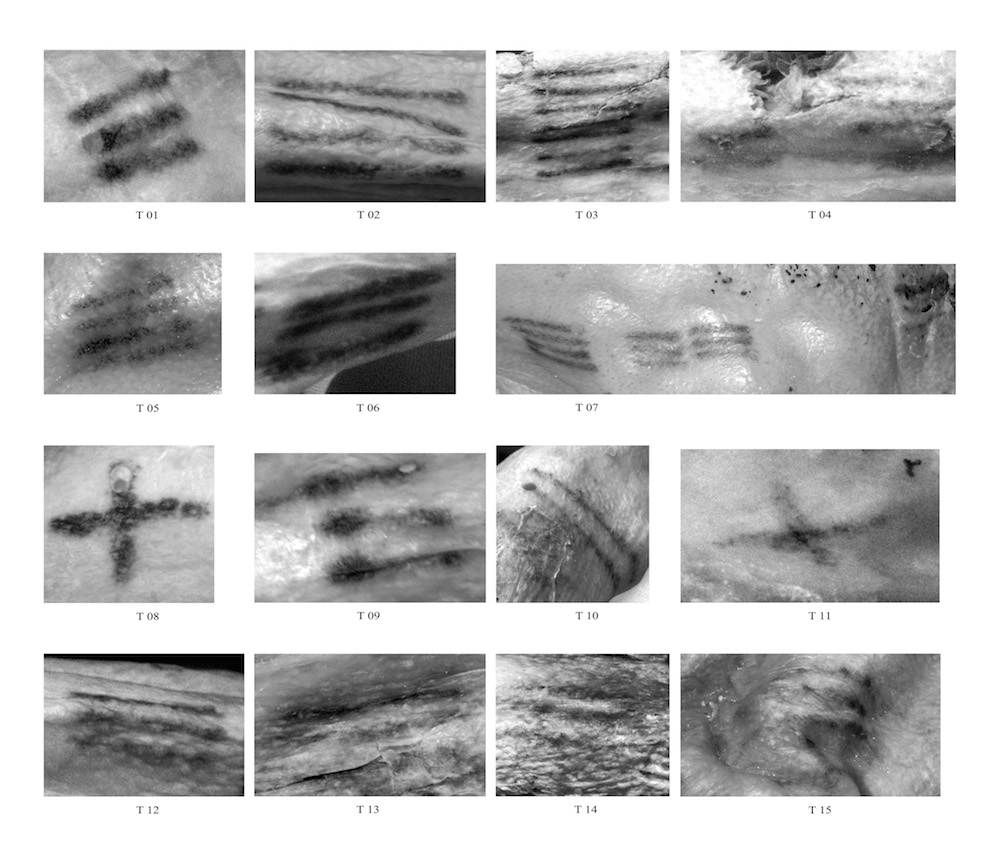
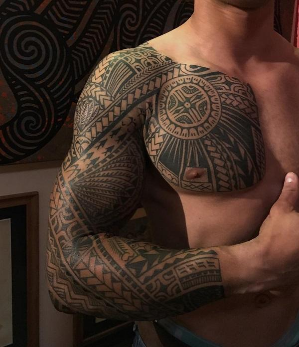
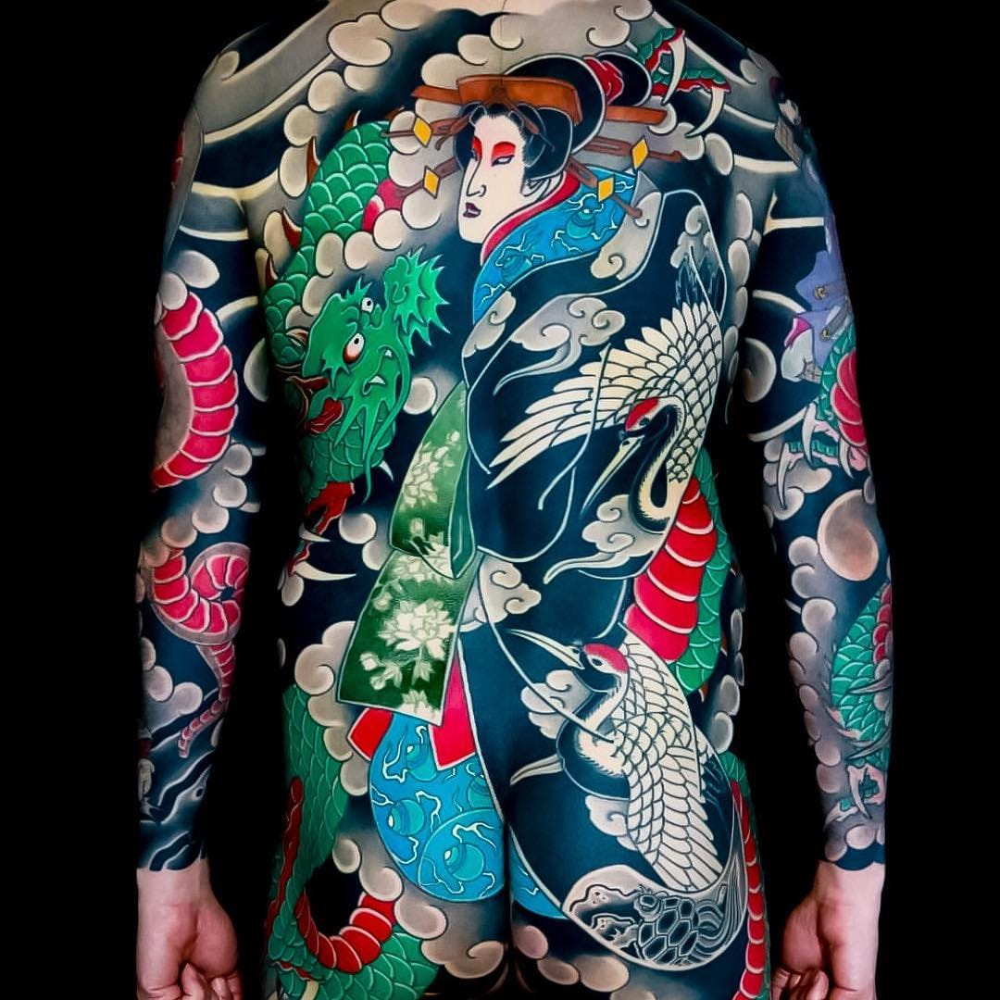

"InkDiscover is an application designed to help make your next decision as easy as possible. Whether you know what you want or are browsing, we can find the right artist for you. From tradtional styles to realism, from colour to black and grey, we have artists and studios to match what you want.
By using our easy to browse Find Artists page, we can connect you with artists that match exactly what you want. You can find a portfolio of previous work, the location of their studio and social media or contact details.
"InkDiscover helped me find the perfect Japanese artist for my sleeve. The site helped me sift through many artists until I found the perfect one. The site showed me where the studio was so I could make sure I knew how to get there and contacting the artists was so easy from there."
"The site gave me so much inspiration. Even if I didn't know what I want, going through different artists gave me an idea of styles I really enjoyed."
Tattooing is an artform that has exsisted since the Neolithic age, the last period of the Stone Age. One of the most prevalent and oldest examples of is tattoos found on Otzi the Iceman who had about 61 tattoos on his body when scientists found him in 1991. Initally, scientists thought that the tattoos served a medical purpose as they notice that the clusters tend to be around the lower back and joints where he was suffering degeneration. However with the most recent tattoo inventory, they also discovered tattoos on his chest where there was no signs of aliment.
Further along, tattoos have been used as a rite of passage for many different cultures. One of the most popular examples is the Polynesian nations. Traditionally, made up of geometrical patterns in solid black these tattoos represented the hierarchical status of a person within their society. The placement of these tattoos were also represented different things such as the legs and feet representing progress and transformation as well as a connection to nature. This style of tattooing became extremely popular in the 1990s in Western soceity and became known as "Tribal".
Another influential style on modern tattooing is Irezumi or Japanese tattooing. These practices can be trace back to almost 5,000 years ago. These were often beautifully illustrative pictures that showed off Japanese folklore. However this view quickly changed as the Japanese government used tattoos to brand criminals, so it was assumed that if you had one that you were a criminal. There is also a strong connection with the Yakuza as well as the hope to be viewed as sophisticated by the West.accordian Senior members of the Yakuza often sported full illustrated bodysuits with full colour to show their rank within the gangs.
